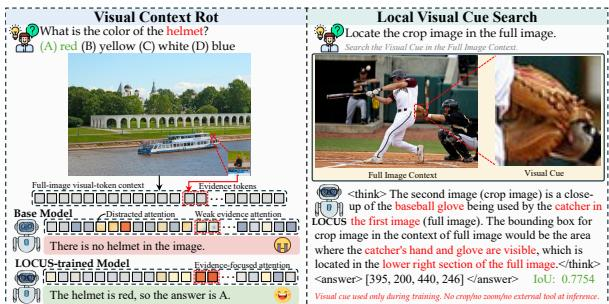

arXiv 新增 + MLLM local cue self-improvement · P3 · 2026-06-17
LOCUS：可作为 VLM 自监督式局部证据训练的 P3 读物，和 grounded thinking 方向互补
把 fine-grained perception failure 解释为 visual context rot，并用可验证 proxy task 让模型内化局部证据搜索。
编号2606.16586
优先级P3
类别arXiv 新增 + MLLM local cue self-improvement
会议arXiv 新增 + MLLM local cue self-improvement
方法Local Visual Cue Search：训练阶段给 local crop visual cue，用 IoU reward 要求模型在原图中定位其空间支持；推理阶段保持普通图文接口。
来源arXiv / OpenReview
先说结论。可作为 VLM 自监督式局部证据训练的 P3 读物，和 grounded thinking 方向互补。 把 fine-grained perception failure 解释为 visual context rot，并用可验证 proxy task 让模型内化局部证据搜索。


核心问题
可作为 VLM 自监督式局部证据训练的 P3 读物，和 grounded thinking 方向互补。
方法拆解
Local Visual Cue Search：训练阶段给 local crop visual cue，用 IoU reward 要求模型在原图中定位其空间支持；推理阶段保持普通图文接口。
主要贡献
把 fine-grained perception failure 解释为 visual context rot，并用可验证 proxy task 让模型内化局部证据搜索。
实验看点
摘要称在细粒度感知、hallucination、general understanding 和 reasoning benchmark 上提升，同时 attention 更聚焦任务相关区域。
局限与读法
更像 VLM 后训练/对齐，不是底层视觉 SSL；需看是否牺牲全局语义和开放域泛化。